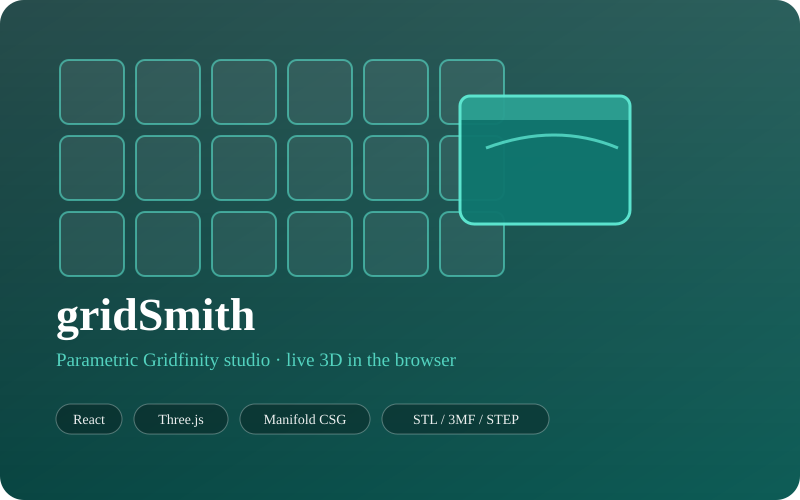
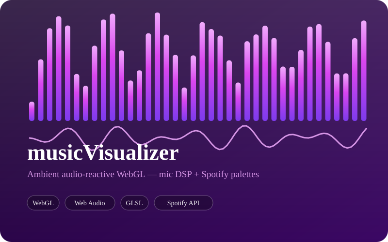
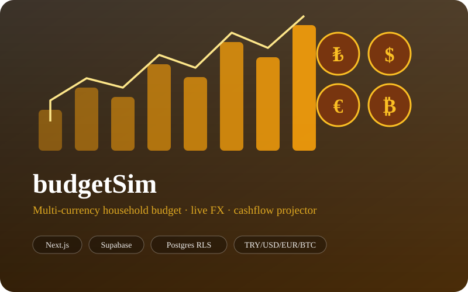
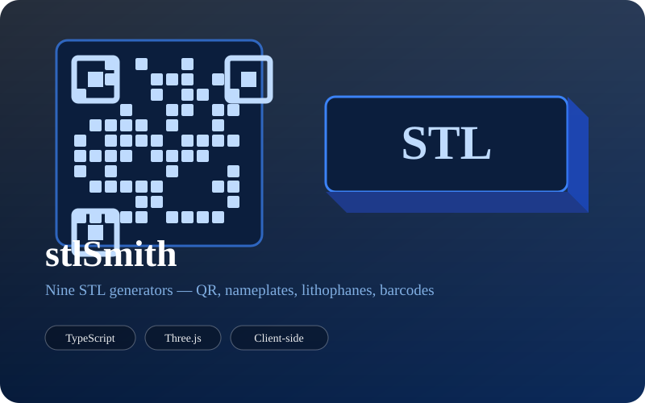
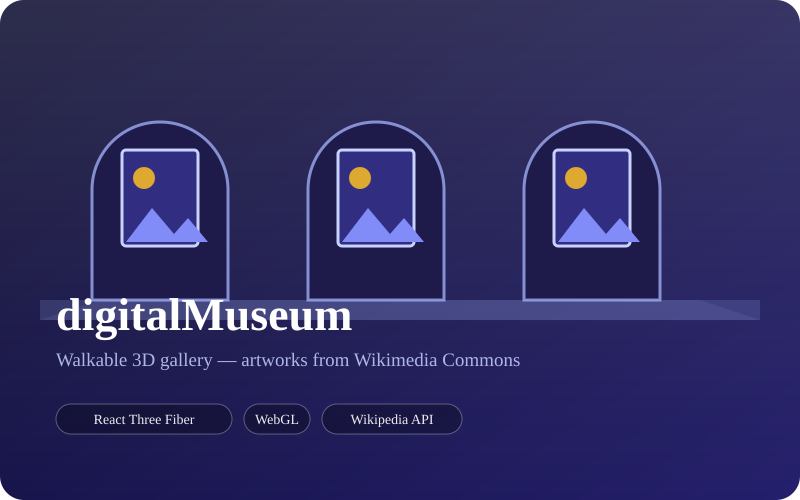
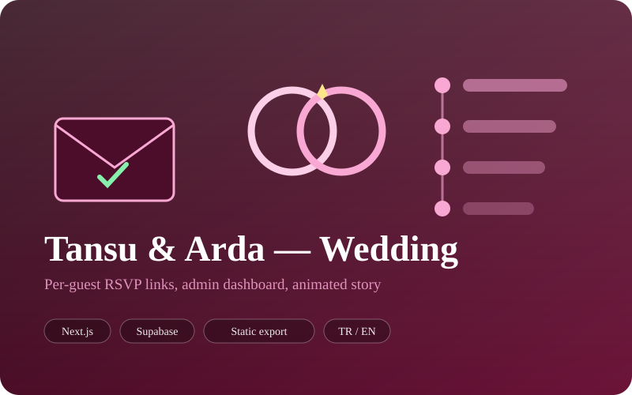
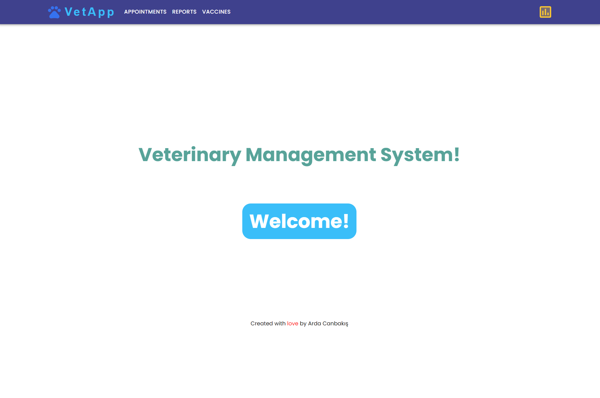

gridSmith
A parametric Gridfinity studio that runs entirely in the browser. Design bins, baseplates, drill-bit and screw organizers with a live 3D preview powered by Manifold CSG, then export STL, 3MF or STEP.
with a passion for learning new languages, extreme sports, DIY projects, and the great outdoors.

A parametric Gridfinity studio that runs entirely in the browser. Design bins, baseplates, drill-bit and screw organizers with a live 3D preview powered by Manifold CSG, then export STL, 3MF or STEP.

An ambient audio-reactive visualiser driven by live microphone input. A custom DSP pipeline — log-spaced bands, spectral-flux onset detection and tempo estimation — feeds WebGL shader modes, with optional Spotify album-art palette extraction.

A multi-currency household budget app holding TRY, USD, EUR, BTC and gram gold in one ledger, with live FX rates, planned-to-completed payment tracking, loan simulation and a 24-month cashflow projector. Balances are always derived server-side, so every device agrees.

Nine generators that turn text, links and photos into print-ready STL files without any software: QR plates, nameplates, Spotify codes, WiFi cards, barcodes, lithophanes and image silhouettes — all rendered and exported client-side.

A walkable 3D virtual art museum built with React Three Fiber, hung with artworks pulled live from Wikipedia and Wikimedia Commons.

A menu-bar microphone mute that flips the actual hardware mute flag, so every app sees it at once. Customisable badge shapes, twelve presets and a global shortcut. Built natively twice — Swift and CoreAudio on macOS, C# on Windows.

A bilingual wedding platform: unguessable per-guest invitation links with RSVP, a login-protected admin dashboard with WhatsApp templates and headcount tracking, and an animated scroll-through story and timeline site. Static export, with Postgres row-level security doing the enforcing.

A comprehensive web application with a React frontend and a Spring Boot backend, providing a complete management solution for any veterinary clinic.

A responsive gym website with features like a BMI calculator, dynamic class schedules, and e-commerce functionality.
I am a versatile developer proficient in both front-end and back-end technologies. My passion for coding is matched only by my desire to learn and adapt to new challenges. I thrive in dynamic environments and am always ready to tackle complex problems with innovative solutions.
From concept to deployment, I offer comprehensive web development services to bring your vision to life. Whether you need a simple website or a complex web application, I have the skills and experience to deliver high-quality solutions.
Creating user-friendly and aesthetically pleasing interfaces is my specialty. I focus on crafting designs that provide a seamless user experience, ensuring that your users can navigate your site with ease and enjoy the process.
Browser-based 3D configurators and print-ready model generators — the kind of thing behind gridSmith and stlSmith. Real-time geometry, live preview and STL, 3MF or STEP export, with no software for your customers to install.
Responsive mobile experiences and native desktop utilities alike. From progressive web apps to menu-bar tools written in Swift and C#, I build software that feels at home on whatever device it runs on.
Have a project in mind, or just want to say hello? Send a message and I'll get back to you.